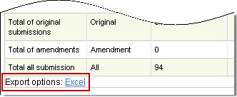

Exporting Report Data CTRP Viewer enables you to export data from your reports to Excel spreadsheets. How to Export Report Data 1. Run the report that contains the statistics that you want to export. 2. At the bottom of the report, next to Export options, click Excel. 3. When prompted, open or save the Excel file.